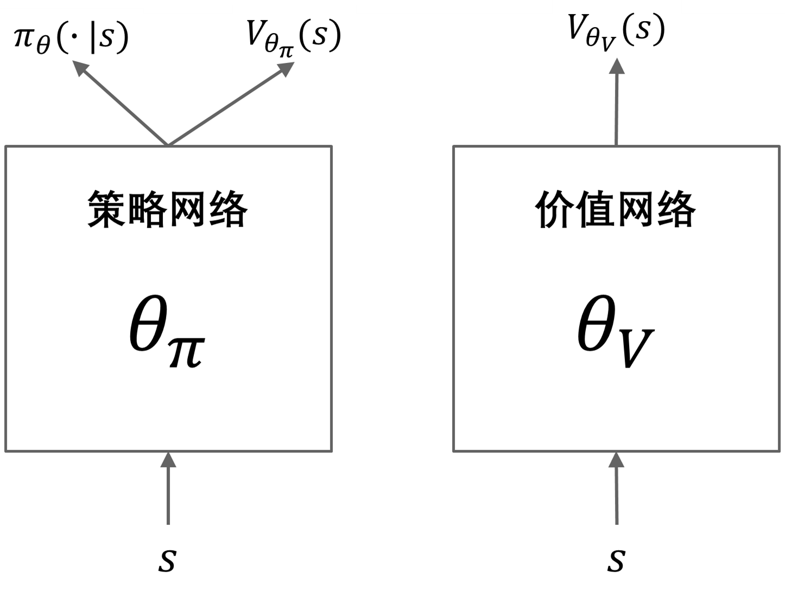
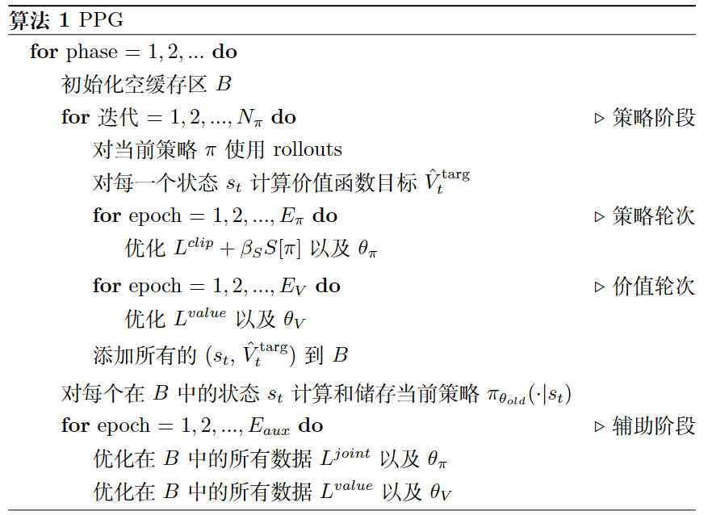

PPG¶
概述¶
PPG 是在 Phasic Policy Gradient 中提出的。在以前的方法中，人们需要选择表示策略和价值函数是否需要分开训练还是共享全局信息。分开训练可以避免目标之间的干扰，而使用共享全局信息可以实现有用特征的共享。PPG 能够兼顾两者的优点，通过将优化分为两个阶段，一个用于推进训练，另一个用于提取特征。
核心要点¶
PPG 是一种无模型、基于策略的强化学习算法。
PP 支持离散动作空间和连续动作空间。
PPG 支持离策略模式和在策略模式。
PPG 中有两个价值网络。
在 DI-engine 的实现中，我们对离策略PPG使用了两个缓冲区，它们仅在数据使用次数约束（数据 “max_use” ）上有所不同。
重要图示¶
PPG 利用分开的策略和价值网络来减少目标之间的干扰。策略网络包括一个辅助价值头部网络，用于将价值知识提取到策略网络中，具体的网络结构如下所示：
{kind=link}
重要公式¶
PPG 的优化分为两个阶段，策略阶段和辅助阶段。在策略阶段，策略网络和价值网络的更新方式类似于 PPO。在辅助阶段，使用联合损失将价值知识提取到策略网络中：
联合损失函数优化辅助目标（蒸馏），同时通过 KL 散度限制（即第二项）保留原始策略。辅助损失定义如下：
伪代码¶
on-policy 训练流程¶
以下流程图展示了 PPG 如何在策略阶段和辅助阶段之间进行交替
{kind=link}
Note
在辅助阶段，PPG 还会对值网络进行额外的训练。
off-policy 训练流程¶
DI-engine 实现了采用两个不同数据使用次数约束（”max_use”）缓冲区的 PPG。其中，策略缓冲区提供策略阶段的数据，而值缓冲区提供辅助阶段的数据。整个训练过程类似于 off-policy PPO，但会以固定频率执行额外的辅助阶段。
扩展¶
PPG 可以与以下方法结合使用：
GAE 或其他优势估计方法
多个具有不同的最大数据使用次数限制的回访缓存
在 procgen 环境中，PPO（或 PPG）+ UCB-DrAC + PLR 是最好的方法之一。
实现¶
默认配置如下所示：
- class ding.policy.ppg.PPGPolicy(cfg: EasyDict, model: Module | None = None, enable_field: List[str] | None = None)[source]
- Overview:
Policy class of PPG algorithm. PPG is a policy gradient algorithm with auxiliary phase training. The auxiliary phase training is proposed to distill the value into the policy network, while making sure the policy network does not change the action predictions (kl div loss). Paper link: https://arxiv.org/abs/2009.04416.
- Interface:
_init_learn,_data_preprocess_learn,_forward_learn,_state_dict_learn,_load_state_dict_learn,_init_collect,_forward_collect,_process_transition,_get_train_sample,_get_batch_size,_init_eval,_forward_eval,default_model,_monitor_vars_learn,learn_aux.- Config:
ID
Symbol
Type
Default Value
Description
Other(Shape)
1
typestr
ppg
RL policy register name, refer toregistryPOLICY_REGISTRYthis arg is optional,a placeholder2
cudabool
False
Whether to use cuda for networkthis arg can be diff-erent from modes3
on_policybool
True
Whether the RL algorithm is on-policyor off-policyprioritybool
False
Whether use priority(PER)priority sample,update priority5
priority_IS_weightbool
False
Whether use Importance SamplingWeight to correct biased update.IS weight6
learn.update_per_collectint
5
How many updates(iterations) to trainafter collector’s one collection. Onlyvalid in serial trainingthis args can be varyfrom envs. Bigger valmeans more off-policy7
learn.value_weightfloat
1.0
The loss weight of value networkpolicy network weightis set to 18
learn.entropy_weightfloat
0.01
The loss weight of entropyregularizationpolicy network weightis set to 19
learn.clip_ratiofloat
0.2
PPO clip ratio10
learn.adv_normbool
False
Whether to use advantage norm ina whole training batch11
learn.aux_freqint
5
The frequency(normal update times)of auxiliary phase training12
learn.aux_train_epochint
6
The training epochs of auxiliaryphase13
learn.aux_bc_weightint
1
The loss weight of behavioral_cloningin auxiliary phase14
collect.discount_factorfloat
0.99
Reward’s future discount factor, aka.gammamay be 1 when sparsereward env15
collect.gae_lambdafloat
0.95
GAE lambda factor for the balanceof bias and variance(1-step td and mc)
PPG 使用的网络定义如下：
- class ding.model.template.ppg.PPG(obs_shape: int | SequenceType, action_shape: int | SequenceType, action_space: str = 'discrete', share_encoder: bool = True, encoder_hidden_size_list: SequenceType = [128, 128, 64], actor_head_hidden_size: int = 64, actor_head_layer_num: int = 2, critic_head_hidden_size: int = 64, critic_head_layer_num: int = 1, activation: Module | None = ReLU(), norm_type: str | None = None, impala_cnn_encoder: bool = False)[source]
- Overview:
Phasic Policy Gradient (PPG) model from paper Phasic Policy Gradient https://arxiv.org/abs/2009.04416 This module contains VAC module and an auxiliary critic module.
- Interfaces:
forward,compute_actor,compute_critic,compute_actor_critic
- compute_actor(x: Tensor) Dict[source]
- Overview:
Use actor to compute action logits.
- Arguments:
x (
torch.Tensor): The input observation tensor data.
- Returns:
output (
Dict): The output data containing action logits.
- ReturnsKeys:
logit (
torch.Tensor): The predicted action logit tensor, for discrete action space, it will be the same dimension real-value ranged tensor of possible action choices, and for continuous action space, it will be the mu and sigma of the Gaussian distribution, and the number of mu and sigma is the same as the number of continuous actions. Hybrid action space is a kind of combination of discrete and continuous action space, so the logit will be a dict withaction_typeandaction_args.
- Shapes:
x (
torch.Tensor): \((B, N)\), where B is batch size and N is the input feature size.output (
Dict):logit: \((B, A)\), where B is batch size and A is the action space size.
- compute_actor_critic(x: Tensor) Dict[source]
- Overview:
Use actor and critic to compute action logits and value.
- Arguments:
x (
torch.Tensor): The input observation tensor data.
- Returns:
outputs (
Dict): The output dict of PPG’s forward computation graph for both actor and critic, includinglogitandvalue.
- ReturnsKeys:
logit (
torch.Tensor): The predicted action logit tensor, for discrete action space, it will be the same dimension real-value ranged tensor of possible action choices, and for continuous action space, it will be the mu and sigma of the Gaussian distribution, and the number of mu and sigma is the same as the number of continuous actions. Hybrid action space is a kind of combination of discrete and continuous action space, so the logit will be a dict withaction_typeandaction_args.value (
torch.Tensor): The predicted state value tensor.
- Shapes:
x (
torch.Tensor): \((B, N)\), where B is batch size and N is the input feature size.output (
Dict):value: \((B, 1)\), where B is batch size.output (
Dict):logit: \((B, A)\), where B is batch size and A is the action space size.
Note
compute_actor_criticinterface aims to save computation when shares encoder.
- compute_critic(x: Tensor) Dict[source]
- Overview:
Use critic to compute value.
- Arguments:
x (
torch.Tensor): The input observation tensor data.
- Returns:
output (
Dict): The output dict of VAC’s forward computation graph for critic, includingvalue.
- ReturnsKeys:
necessary:
value
- Shapes:
x (
torch.Tensor): \((B, N)\), where B is batch size and N is the input feature size.output (
Dict):value: \((B, 1)\), where B is batch size.
Benchmark¶
environment |
best mean reward |
evaluation results |
config link |
comparison |
|---|---|---|---|---|
Pong
(PongNoFrameskip-v4)
|
20 |

|
DI-engine PPO off-policy(20)
|
|
Qbert
(QbertNoFrameskip-v4)
|
17775 |

|
DI-engine PPO off-policy(16400)
|
|
SpaceInvaders
(SpaceInvadersNoFrame skip-v4)
|
1213 |

|
DI-engine PPO off-policy(1200)
|
引用¶
Karl Cobbe, Jacob Hilton, Oleg Klimov, John Schulman: “Phasic Policy Gradient”, 2020; arXiv:2009.04416.